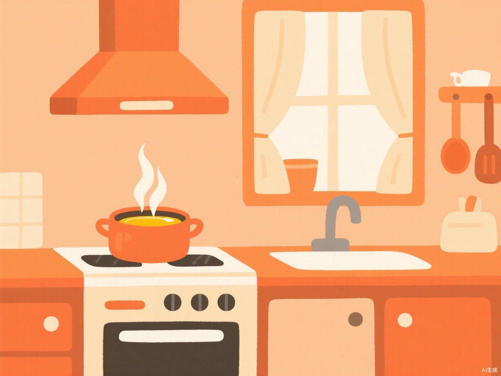
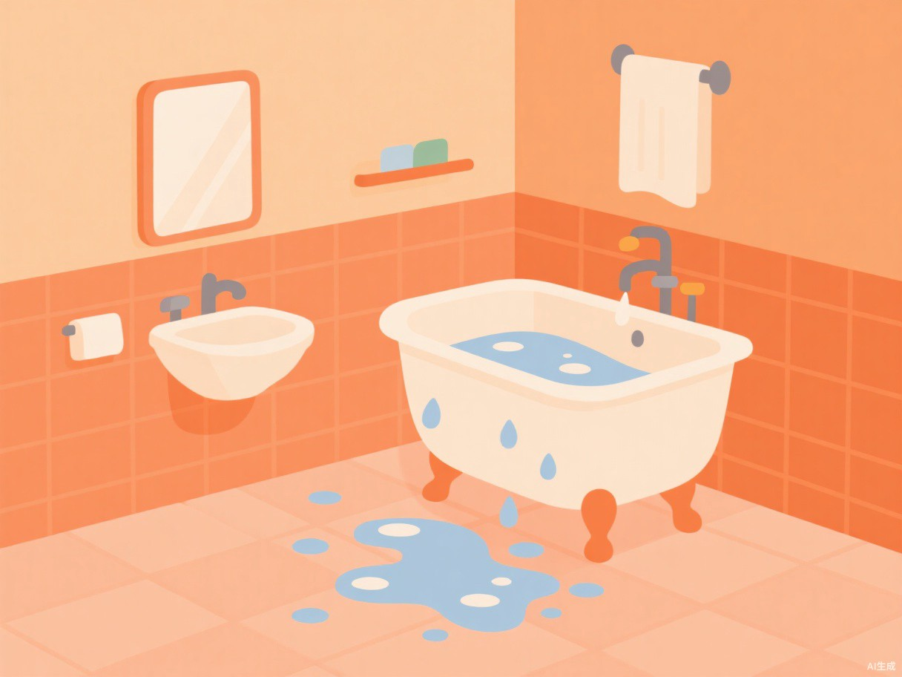
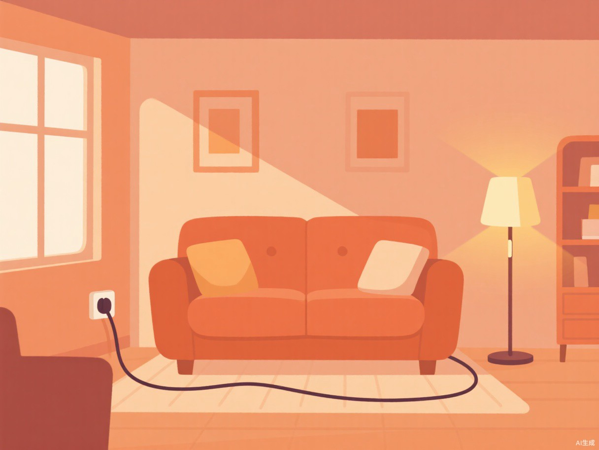
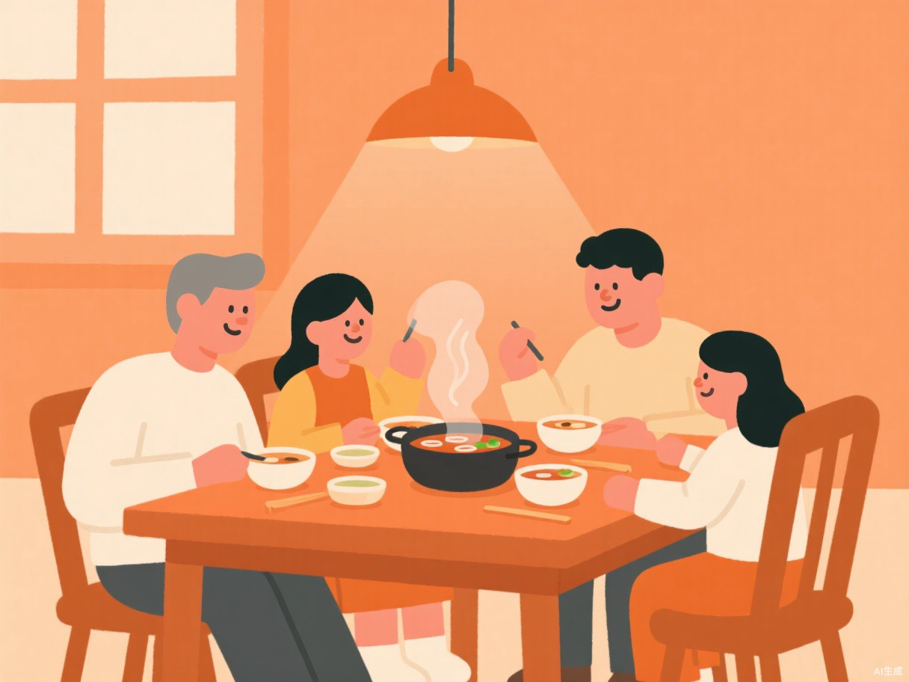
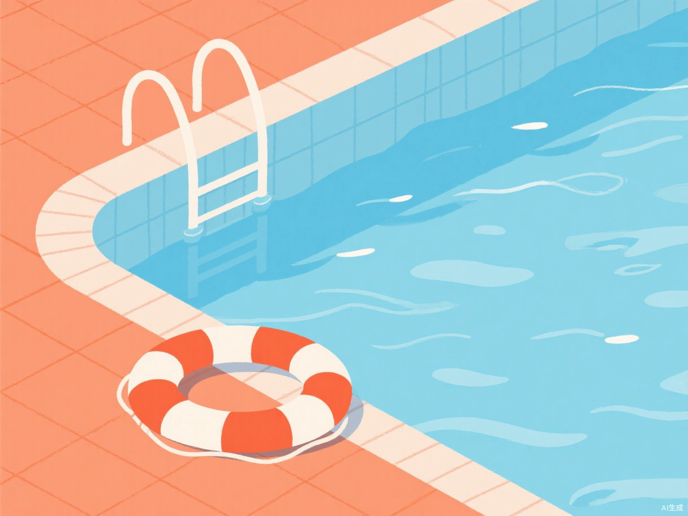
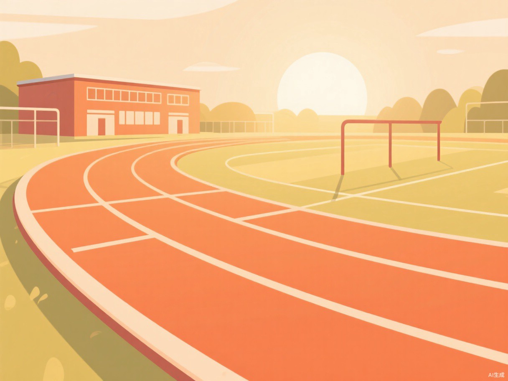
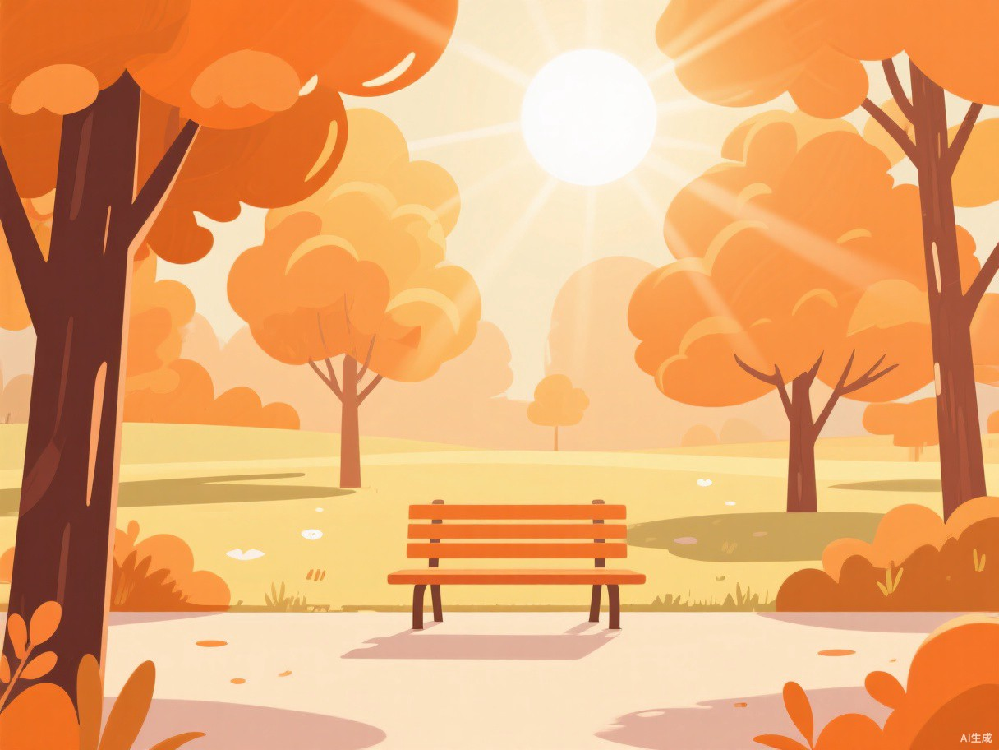
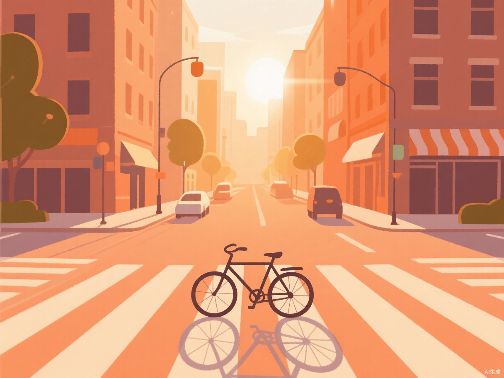

同样一处烫伤，在厨房和在餐厅处理方式不同；同样是摔倒，浴室和操场的风险也不一样。 按场景认识风险，比背十条急救口诀更容易在关键时刻想起来。

厨房是家里意外密度最高的空间：油温、沸水、刀具和燃气同时存在，而人往往一手拿锅一手接电话。
热油飞溅、掀锅盖被蒸汽冲到、端锅时泼洒
切菜时滑刀、清洗破碎的碗碟

洗澡时人体血管扩张、地面湿滑，是晕倒和滑倒的高发地；而插座与吹风机又让触电风险成倍增加。
瓷砖积水、光脚进出浴缸时崴脚或磕碰
湿手插拔插座、吹风机掉进水中

客厅看似最安全，却是儿童意外最多的地方：地上拖着电线，茶几上摆着坚果果冻，沙发缝里还塞着硬币。
孩子把手指或金属物伸进插座、啃咬充电线
边跑边吃坚果、果冻，或把小玩具含在嘴里

吃饭时说话、大笑、赶时间，是噎食最常见的触发条件；而火锅、热汤、刚出锅的油炸食物则带来烫伤风险。
大块肉、汤圆、鱼刺卡喉后继续吞咽
热汤洒出、火锅汤底溅到手臂或大腿

真实的溺水多数是安静的：头后仰、口鼻时沉时浮、无法呼救。把孩子交给“会游泳的同伴”看管，是最常见的失误。
腿抽筋、浅水区滑倒、贸然下水救人
池边追逐、湿脚踩在瓷砖上

体育课和课间是扭伤、摔倒最集中的时段，落地姿势不当、场地不平、没热身都会让踝关节瞬间受伤。
跳下器械时脚踝内翻、摔倒手撑地
碰撞鼻部、天气干燥时抠鼻

高温加高湿时汗液难以蒸发，体温调节会突然失效。中暑不是“晒晕”，而是可能迅速恶化的急症。
军训、体测、长时间户外作业后头晕恶心
空气干燥、鼻腔黏膜脆弱时突然出血

骑车急刹、雨天打滑、拥挤时被行李磕碰，都是上学路上常见的受伤原因，伤后最先要判断的是“出血压得住吗”。
摔倒擦伤、被玻璃或金属边缘划破
湿滑路面刹车、下车时脚踝别住
内容参考中国红十字会现场救护指南，仅供科普，不能替代专业医疗判断。